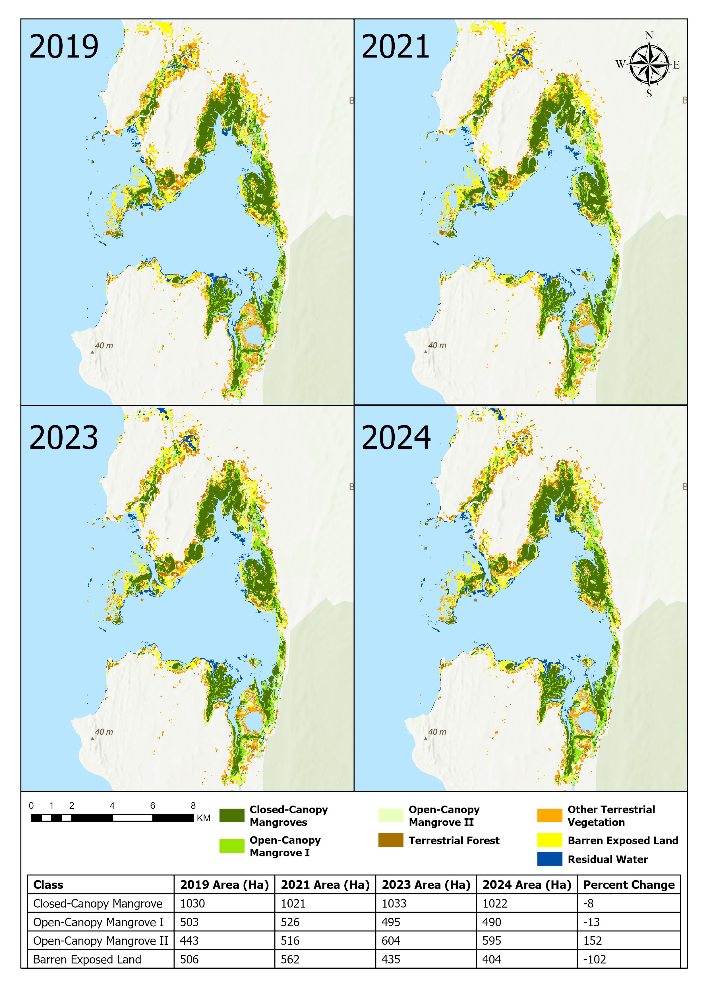
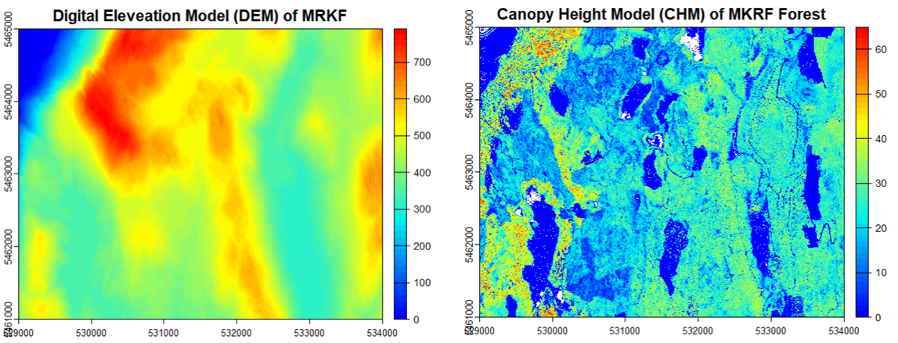
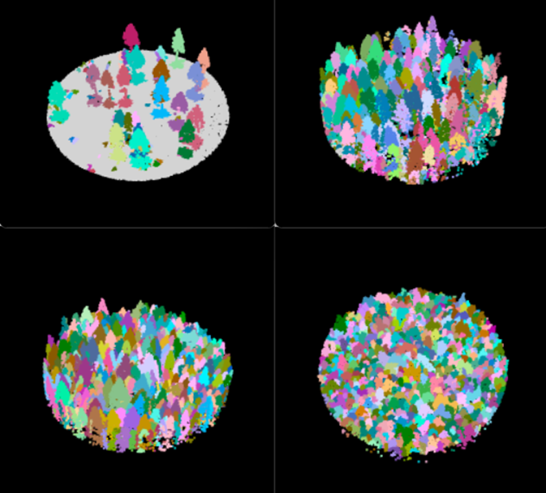
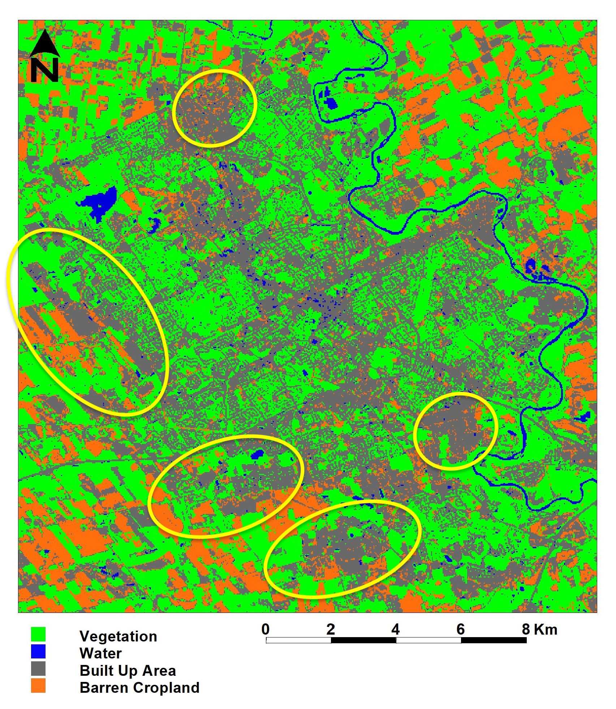

Remote Sensing Projects
Welcome to my Remote Sensing Projects page!
In this section, you’ll find a collection of my remote sensing projects that reflect my journey from exploring geospatial data as an undergraduate to tackling advanced projects using programming languages R and Python. Remote Sensing is an essential tool for environmental management as it offers powerful tools to map, monitor, and manage Earth’s ecosystems.
Monitoring Mangrove Restoration Using Sentinel - 2 Imagery
As the capstone project of my Master’s program in Geomatics for Environmental Management (MGEM), this project is a significant culmination of my academic journey. For my project, I collaborated with Blue Ventures, a marine conservation organization focused on coastal ecosystem restoration, to study their mangrove restoration efforts in the Bay of Assassins, Madagascar. Using Sentinel-2 satellite imagery and GEM, a Google Earth Engine based tool, I mapped mangrove forests from 2019 to 2024, measuring changes in forest area and vegetation health.
My study investigates the question: To what extent can Sentinel-2 imagery detect changes in mangrove forest area and health at restoration sites in Madagascar? I answer this by quantifying mangrove vegetation changes, identifying areas of growth and loss, and assess vegetation health overtime. The focus on mangroves in restoration areas supports Blue Ventures’ mission to protect and restore mangroves in the region.
Tools & Methods:
Data: Sentinel-2 satellite imagery (2019–2024), Mangrove Restoration sites in Madagascar
Tools: Google Earth Engine (GEM v2) for time-series analysis, QGIS & ArcGIS Pro for mapping and visualizations
Analysis:
Quantify changes in mangrove extent over time.
Identify areas of significant growth and loss.
Assess vegetation health using spectral indices (NDVI,).
My full report will be available here once the project ends, but I’ve summarized and visualized some of my results below.
Key Results:

Reflection:
This project was a deeply rewarding experience that not just expanded my knowledge and technical skills but also connected me to a cause I deeply care about. Growing up in Ethiopia, I have always I’ve always felt a strong pull toward supporting environmental conservation in Africa, and this project gave me the chance to do just that. Working with Blue Ventures and local partners in Madagascar, I saw firsthand the real-world impact of our research helping to restore mangrove ecosystems that are vital for coastal protection and biodiversity. Beyond the technical skills in GIS and remote sensing, I learned so much about time management, communication, and succesful client engagement. Overall, this Capstone project was an enriching experience that allowed me to combine technical expertise with a passion for positive change. I feel fortunate to have worked on something so impactful and meaningful, and this project has further strengthened my commitment to supporting environmental and sustainability efforts worldwide.
Skills Gained:
Satellite Imagery Analysis (Sentinel-2)
Time-Series Analysis (Google Earth Engine)
Mangrove Vegetation Change Detection
Vegetation Health Assessment (NDVI)
Data Classification and Visualization
Environmental Monitoring & Reporting
LiDAR Data Processing: From Basics to Tree Segmentation
I first encountered LiDAR data during our graduate program orientation, where I was blown away by 3D visualizations created captured from a drone flight. This moment sparked my excitement to dive into the world of LiDAR and explore what seemed like unlimited potential.
Getting Hands-On with LiDAR
In this assignment, I learned how to process LiDAR data in R to create a Canopy Height Model (CHM), or as I like to call it, “tree height map.” The goal was to familiarize myself with handling .las files, working with multiple tiles, and extracting point clouds from specific forest plots. I generated digital elevation models (DEMs) and CHMs to visualize tree heights and analyzed plot-level metrics to describe vegetation structure. It was a great introduction to organizing data, normalizing point clouds, and creating useful forestry products. Below are images of Digital Elevation and Canopy Height Models I was able to generate from LiDAR data. It may not look like much in this form but using these layers we were able to analyze terrain features, assess vegetation structure, and enhance our understanding of the landscape and it composition from the comfort of the computer lab.

Individual Tree Segmentation
The second assignment took me to the next level, where I worked with LiDAR data from the Malcolm Knapp Research Forest to identify individual trees. Using the lidR package in R, I compared algorithms for tree detection by analyzing point clouds and CHMs. I fine-tuned parameters to improve results and deepened my understanding of segmentation methods through practical questions.

Reflection:
It’s incredible to see how quickly I progressed from a curious observer to someone who can process and segment LiDAR data to identify individual trees. Each step, from mapping terrain to identifying individual trees, has expanded my understanding of LiDAR’s potential in forestry and beyond. I’m excited to continue exploring this technology’s applications in environmental monitoring.
Skills Gained:
LiDAR Data Processing
Canopy Height Model (CHM) Creation
Point Cloud Classification
Tree Segmentation
Algorithm Comparison
R Programming (lidR package)
Exploring Urban Expansion in the Kitchener-Waterloo Region: My First Project
Reflecting on this project always brings me back to the early days of my remote sensing journey. It was during my undergraduate years, when I first introduced to the field of geomatics, and intrigued by the idea of examining the world from a distance and without physical contact a.k.a “remote sensing”. This project marked the beginning of my journey in remote sensing and how satellite imagery can reveal changes in the world over time.
For this project, I used Landsat images from 1990 to 2020 to visualize and quantify how urban land cover had changed over the 30-year period. I used an ISODATA unsupervised classification algorithm to categorize the images into four land cover classes: vegetation, water, built-up areas, and barren cropland. I then performed a bi-temporal change detection analysis to identify urban expansion. The results revealed a 16.5% increase in the urban landscape, mostly replacing barren cropland. In my figure below yellow circles indicate some of the areas in which major urban expansion occurred. This urban sprawl was driven by rapid population growth, and the spatial pattern was scattered, emphasizing the need for monitoring urban growth to reduce its environmental impact.
Results:
 |
 |
Reflection:
Looking at this project now, I can’t help but reflect on how much I’ve grown in the remote sensing field. At the time, I was just starting to understand the process, working with image classification but without any coding. Today, I’m able to tackle much more complex analyses and understand the underlying principles more deeply.
Skills Gained:
Image Classification
Change Detection Analysis
Geo-spatial Analysis
Report Writing